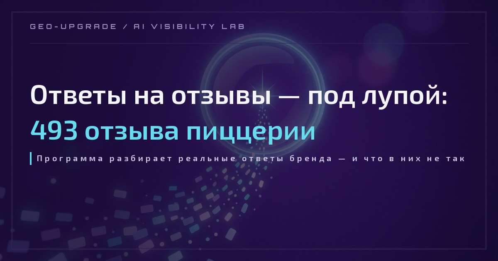

Лаборатория AI-видимости бренда · GEO-Апгрейд
Ответы на отзывы — под лупой: программа разобрала 493 отзыва пиццерии
Первый боевой прогон конвейера отзывов: Make Love Pizza, Томск — 493 отзыва за восемь лет, 201 ответ бренда, охват 41%, качество 4.2 из 10. И фирменный тон, который живёт только на позитиве

Главный вывод: ответы на отзывы — это публичный канал, который читают и люди, и нейросети. У Make Love Pizza идеальный продукт (83% пятёрок) и живой фирменный тон — но тон работает только на позитиве, решение встречается в 20% ответов, а больше половины негатива бренд оставил без публичной реакции. Продукт держит рейтинг. Методика показывает, где бренд теряет клиентов, несмотря на него.
Зачем я смотрю на ответы чужого бренда
Ответ на отзыв — это не письмо в личную переписку. Его читают все, кто решает: идти в пиццерию или пройти мимо. И ещё один читатель появился недавно — нейросеть. Когда клиент спрашивает у ИИ «стоит ли идти в эту пиццерию», модель собирает ответ из открытых сигналов: карточка, отзывы, то, как бренд разговаривает со своими людьми. Живая переписка — сигнал доверия. Молчание — тоже сигнал, только противоположный.
У меня есть методика работы с ответами на отзывы. Долгое время она жила в таблице: 22 метрики на каждый ответ, формула оценки и пороги, которые я выводила не из воздуха, а из того, что реально работает на локальных карточках. Заполнять вручную можно — я и заполняла. Но одна карточка — это неделя сосредоточенной работы, а карточек у бизнеса много.
Поэтому методика ушла в автомат: конвейер «Отзывы-конвейер» собирает отзывы прямо с живой карточки, размечает ответы по всем критериям и считает каждую цифру. Принцип тот же, что во всей лаборатории: машина считает — человек проверяет.
Для первого боевого прогона я взяла не клиента, а живую карточку: Make Love Pizza, Комсомольский проспект, 14А, Томск. Не «покажем красиво» — а потому что у неё 493 отзыва за восемь лет и настоящая переписка бренда с людьми. Идеальный полигон.
Методика: 22 метрики и одна формула
Каждый ответ бренда проходит по 22 критериям. Жёсткие — с порогами: обратились ли по имени или по деталям отзыва, названа ли проблема клиента, предложено ли решение, есть ли конкретика шагов, извинение, эмпатия. Мягкие — в режиме мониторинга: призыв к действию, контакт, соответствие тону, грамотность, шаблонность, риск эскалации.
Формула оценки простая. Десять метрик дают по баллу, добавляется персонализация (0–2), вычитаются шаблонность и риск эскалации — и всё нормализуется в шкалу 0–10. Статусы: «Хорошо» — от 7.0, «Требует внимания» — 4.0–6.9, «Плохо» — ниже 4.0.
- Охват ответов — не ниже 80%. Ответ на отзыв видит не только его автор.
- Проблема и решение — не ниже 80%. Клиент должен услышать себя и понять, что делать дальше.
- Время — до 24 часов. Скорость — часть тона, а не бюрократии.
- Обращение по имени — не ниже 70%. Персонализация лечит шаблонность лучше любых промптов.
Пороги — не красивые круглые числа ради чисел. Это уровни, на которых карточка начинает работать на бренд, а не против.
Конвейер: что делает программа
Три команды — и карточка разобрана до винтика:
- Сбор — собирает все отзывы с живой страницы карточки Яндекс Карт, по 50 за запрос, вместе с текстами ответов бизнеса и датами.
- Разметка — оценивает каждый отзыв и каждый ответ по 22 метрикам методики.
- Отчёт — собирает книгу с пятью листами (сбор, разметка, статистика, рекомендации, промпты), отчёт и снимок данных — чтобы через пару месяцев сравнить «до и после».
Сбор занял 11 запросов. Полный цикл — минуты. То, что раньше съедало неделю, теперь занимает время чаепития.
Честность: разметка в этом прогоне — демо-режим, эвристика по словарям. Численные метрики (время, длины, охват, даты) — точные. Тонкие вердикты — эмпатия, конкретика, «работает или нет» — приблизительные; для продающего кейса поверх демо идёт ручная проверка 20–30 ответов. Мы это не скрываем — это часть протокола.
Замер: цифры карточки
В сборе — все отзывы карточки с 2018 по 2026 год. Рейтинг высокий, продукт хвалят. Но смотрим дальше.
| Показатель | Значение |
|---|---|
| Отзывов собрано | 493 (2018–2026), 11 запросов по 50 |
| Средний рейтинг | 4.68 из 5 |
| Ответов бренда | 201 — охват 41% при пороге методики ≥80% |
| 5★ | 409 отзывов (83%) |
| 4★ / 3★ | 45 (9%) / 16 (3%) |
| 1–2★ | 22 (4%) |
| Ответов на негатив (1–2★) | 10 из 22 — больше половины негатива без публичной реакции |
| Ответов в пределах суток | 10 из 201 (5%) |
| Среднее время ответа | 280 часов (≈12 дней); на негатив — 302 часа |
| Отзывов без текста | 0 — карточка живая, клиенты пишут подробно |
Отзывов без текста — ноль. Это уже редкость: обычно треть карточки — немые звёзды, по которым не понять ничего. Здесь люди пишут. И именно поэтому следующий раздел такой показательный.
Хроника: как умирает процесс
Охват ответов по годам — самая честная картинка из всего замера:
| Год | Отзывов | С ответом | Охват |
|---|---|---|---|
| 2018 | 1 | 0 | 0% |
| 2019 | 60 | 0 | 0% |
| 2020 | 47 | 0 | 0% |
| 2021 | 59 | 21 | 35% |
| 2022 | 70 | 69 | 98% |
| 2023 | 116 | 72 | 62% |
| 2024 | 78 | 4 | 5% |
| 2025 | 45 | 26 | 57% |
| 2026 | 17 | 9 | 52% |
В 2022 году отвечали почти на каждый отзыв — 98%. Через два года — на один из двадцати. Классическая история: процесс держался на одном человеке, человек ушёл — процесс ушёл вместе с ним. Никто не заметил пропажу, потому что отвечать на отзывы — работа невидимая: пока она есть, её не ценят, когда её нет — уже поздно.
Самое дорогое — из 22 негативных отзывов (1–2★) с ответом только 10. Больше половины негатива осталось без публичной реакции. А именно негатив читают перед покупкой чаще всего.
Качество ответов: считаем по негативу
Теперь сами ответы. Операционные метрики методики (проблема, решение, конкретика, эмпатия) честно считать только там, где проблема есть — по ответам на негативно-нейтральные отзывы. Их 38 из 493, и на них бренд ответил 16 раз (из них на 1–2★ — 10 из 22). Вот как выглядит этот срез:
| Метрика | По негативу | Порог | Статус |
|---|---|---|---|
| Обращение по имени/деталям | 8 из 10 (80%) | ≥70% | 🟢 |
| Поручение ответа (повторить проблему своими словами) | 2 из 10 (20%) | ≥80% | 🔴 |
| Предложение решения | 2 из 10 (20%) | ≥80% | 🔴 |
| Конкретика решения | 3 из 10 (30%) | ≥70% | 🔴 |
| Извинение/благодарность | 4 из 10 (40%) | ≥60% | 🔴 |
| Эмпатия | 4 из 10 (40%) | ≥60% | 🔴 |
| Соответствие тона | 6 из 10 (60%) | мониторинг | — |
| Грамотность | 8 из 10 (80%) | мониторинг | 🟢 |
| Шаблонность | 0% | мониторинг | 🟢 |
| Риск эскалации | 0% | мониторинг | 🟢 |
| Средняя оценка качества (по негативу) | 5.08 из 10 | ≥7.0 | 🔴 |
| «Хорошо» (≥7.0) | 2 из 10 | — | — |
| «Плохо» (<4.0) | 2 из 10 | ≤20% | 🔴 |
Как считаются операционные метрики. Только по ответам, где проблема есть: в этом прогоне — 10 ответов на негативные отзывы (1–2★) и 16 на негативно-нейтральные (1–3★). По всем 201 ответам, включая позитивные, эти пункты не считаются — на позитиве называть проблему не о чем. Демо-разметка консервативна: словарь эмпатии не включает слово «простите», поэтому реальный уровень эмпатии и извинений может быть выше.
Шаблонности — ноль: 97% ответов уникальны. Это честная находка, и она ценная: бренд не штампует отписки, и такое встречается нечасто. По имени и деталям отзыва бренд обращается в 80% ответов на негатив — тоже сильно выше среднего по рынку. Но дальше — операционная пустыня: суть претензии своими словами повторяется в 20% ответов на негатив, решение предлагают в 20%, конкретные шаги — в 30%, эмпатию — в 40% (и это с учётом консервативного словаря демо-разметки). Это не «плохие ответы». Это ответы-эмоции без операционной части: бренд объясняет, но не заключает сделку.
«Котииик» против блендера: где живёт фирменный тон
Самая интересная находка прогона. У Make Love Pizza уникальный тон: «Котииик», «чмок», «ай, как приятно», смайлы и сердечки. Демо-разметка формально помечает это как «неформальный тон», но по смыслу это бренд-контекст: так разговаривает их аудитория, и это не дефект, а стиль.
Проблема в распределении. Средняя длина ответа на позитив — 8 слов. Живой, короткий, тёплый. На негатив — 133 слова и уже серьёзный язык. Бренд как будто стесняется своего тона ровно там, где он нужнее всего.
Ответ на 2★ (клиент: «Все вкусно, но ОЧЕНЬ шумно… Портит всю атмосферу»):
«Котиииик! Про кафеху на Комсе, да?( У нас и правда бывает супер ажиотаж на коктейли, а блендер супер мощный — шумит на славу. Но ребята стараются…»
Оценка 2.31 из 10: грамотность ✓; имя клиента ✗ (обращение есть, но не имя), эмпатия ✗, решение ✗, конкретика ✗, извинение ✗. Клиент написал про шум — бренд ответил про блендер.
Лучший ответ на негатив (1★, оценка 7.69 из 10) — отзыв Евгении про «филиал» на Ленина и «целлофан» в пицце «Инглиш»:
«Ох, Евгения :( Нам правда жаль, что мы не смогли. Не оправдали. И понимаем все ваши эмоции. Насчет "целлофана" в Инглише — это 100% не целлофан… Наши пиццы запекаются при температуре около 300 градусов…»
Имя ✓, проблема ✓, конкретика объяснения ✓, извинение ✓, эмпатия ✓, тон ✓, грамотность ✓; контакт ✗, решение ✗. До десятки не хватило: конкретного шага «что теперь» и призыва к действию.
Лучший ответ на негатив в выборке (1★, оценка 7.69) — совсем другой: развёрнутое объяснение с деталями продукта, эмпатия и извинение. До десятки не хватило двух пунктов: конкретного решения и призыва к действию с контактом. Клиент уходит без ответа на вопрос «что теперь» — вернуть ли доверие, куда писать, когда ждать изменений.
Вывод по тону: бренду не нужно «повзрослеть». Нужно перенести живость на негатив — и добавить к ней операционку: что сделаем, к какому сроку, куда написать, если не понравится.
Негатив без ответа
Малая выборка — это плюс: продукт хвалят, ругают в основном сервис. По категориям негатива (1–3★): сервис — 6, цена — 4, ожидание — 2, качество — 2. Повторяющийся пункт — поведение персонала и чистота залов.
А теперь закономерность, которую видно только через методику: повторяющиеся жалобы — все без ответа бренда.
- «Персонал общается на Ты, это очень неприятно» (2★, 2024) — без ответа.
- «Принесли упаковки сахара со следами тараканов» (1★, 2023) — без ответа.
- «Запах пережжённого масла в холле» (2★, 2024) — без ответа.
Бренд не видит свои повторяющиеся проблемы, потому что не читает то, на что не отвечает. Это и есть главная метрика, которую невозможно увидеть без системы: не «как мы отвечаем», а «что мы перестали замечать».
Что делать: протокол P0–P2
- P0 — охват: отвечать на все негативные отзывы в первые 24 часа. Сейчас 12 из 22 — без ответа.
- P0 — решение и конкретика: каждый ответ на негатив заканчивается конкретным шагом: что делаем, к какому сроку, куда сообщить. Сейчас решение — в 20%, конкретика — в 30%.
- P1 — поручить ответ и эмпатия: повторить суть претензии своими словами, прежде чем объяснять. По негативу сейчас 20% и 40%.
- P1 — фирменный тон на негативе: перенести живость туда, где больно.
- P2 — время ответа: с 12 дней до 24 часов. Процесс, а не усилие: ответственный и слоты проверки.
- P2 — персонализация на позитиве: в среднем 6 слов — мало; методика требует 1–2 деталей отзыва в каждом ответе.
Снимок прогона сохранён. Повторный замер после внедрения покажет диф по каждой метрике — что изменилось, а что осталось на бумаге. Это и есть работа методики: замер → план правок → контрольный замер.
Честные ограничения
- Одна карточка, один день — это пилот методики, а не статистика по рынку.
- Разметка — демо-режим: численные метрики точные, тонкие вердикты приблизительные.
- Данные карточки публичны; конвейер не обращается к закрытым источникам.
- Половина негатива без ответа — интерпретации «почему так вышло» у нас нет: только факты и гипотеза о процессе.
Мы не публикуем выводов «бренд плохой». Рейтинг 4.68 — это хорошая пиццерия. Мы публикуем то, что видит методика: где живой бренд теряет клиентов, не замечая этого. Полный разбор с таблицами и снимком данных — в кейсе.
Связанные термины
Оценим ответ на негативный отзыв по пяти осям: признание, решение, срок, переход в личку, живой тон. Вставьте ваш ответ — разберём.
Похожие материалы
- ← Кейс: что нейросети говорят о нас — прогон №001 отслеживателя
- ← Отзывы, карты и каталоги: где AI берёт образы локального бизнеса
- ← Навигатор отзывов: библиотека промптов для работы с отзывами
- ← Что нейросети говорят о нас: прогон №001 учебного отслеживателя
- ← Все материалы лаборатории
- ← GEO-Апгрейд как термин: как нейросеть смешала лабораторию Дарьи Жарких с услугой Сайт Мейкерс